《一千零一夜》是一夜讲一个故事；这里是一页做一件东西：一个主题、一个构思，页里只放适合它的东西。每一页都是完整的，从哪一页看起都行。
黄昏的湖边，木栈道上立着几层楼高的品牌名，字面嵌着一圈圈灯泡。水里的倒影是实时算的：字脚那里像镜子，越近越糊越碎，风吹过的地方起一片片细纹。太阳落山后天空从粉红沉到深蓝，灯泡从左到右一盏盏亮起来，接着出星星、出月牙、飞出萤火虫。
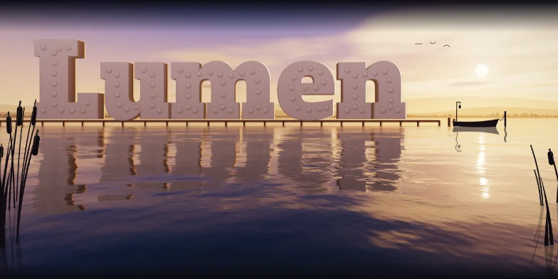
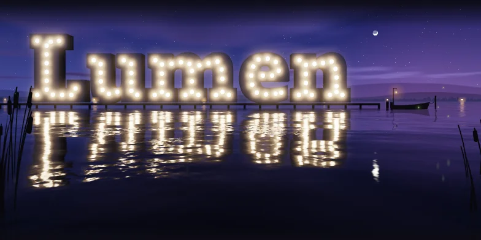
一张宽幅镭射收藏卡摆在留着裁切线的印张上，品牌名是烫上去的银色镭射箔，外圈一道碎钻边框。颜色按衍射光栅实时算，指针就是灯，移到哪里，亮线和彩虹就跟到哪里。下面把这层膜拆成一套元素库：烫印、扭索纹、换个角度就变图的光变标、能刮开的兑换码、撕开会留下 VOID 的封签、按钮、开关、加载骨架……和大卡用同一套着色器逐像素渲染，另有 CSS 平替，每一格都能复制链接和代码。
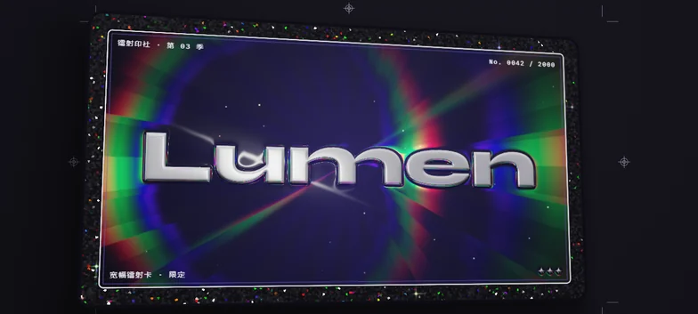
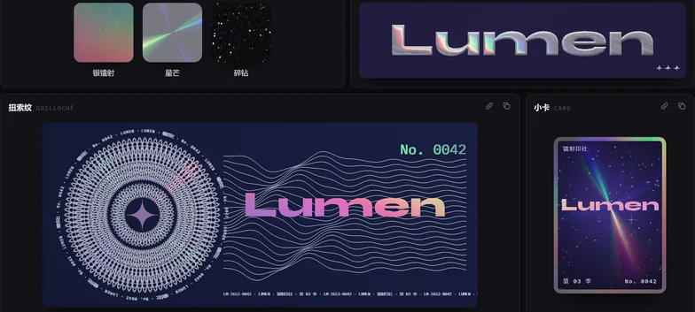
品牌名自动画成一张地铁线路图：每一笔是一条线，只走横竖和 45° 斜线，笔画相交处是换乘站，站名配拼音，自动避开线路和别的站名；原字很淡地垫在线网底下，中文笔画再多也认得出。开场线路一条条铺出来，五点半首班车发车，一天的运营压缩在两分钟里。下面拆出一套导视元素：输入几个字就画成线路图的字标、车门上方的线路条图、站台站名牌、三色 LED 点阵的到站屏、七段数码管的运营屏、能拖卡刷的闸机、吊挂导向牌、导视图标、首末班时刻表、能按拼音首字母查的站名查询，还有站卡、换乘方案、铺线和列车、图例、线路标、按钮。站名跟着上面的图走，每一格都能复制链接和代码。
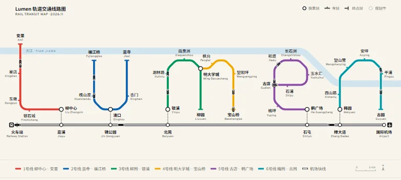
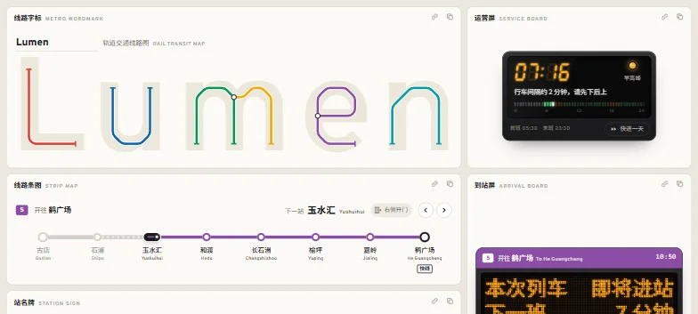
红色安全灯下，品牌名作为一张黑白照片在显影液里慢慢浮出来：最黑的墙面先出，亮着的字最后出。药水是实时算的水面，有折射、焦散和灯泡的倒影；显影完夹起来沥水，镜头移到定影盘，最后拉灯绳开灯。
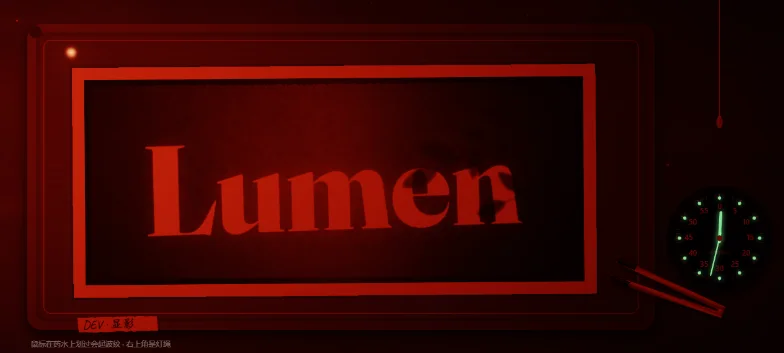
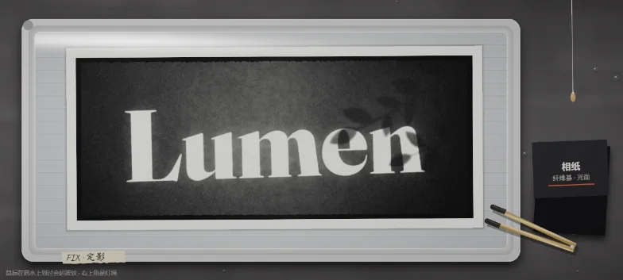
从轨道上看一颗行星，品牌名是大陆：海岸线被咬出海湾和小岛，内陆有山脉和积雪。开场是夜里，城市灯光拼出字；太阳从地平线后面升起，晨昏线扫过整片大陆，一圈昼夜大约五十秒。字按相机视角投到球面上，正对着看时字形不走样。
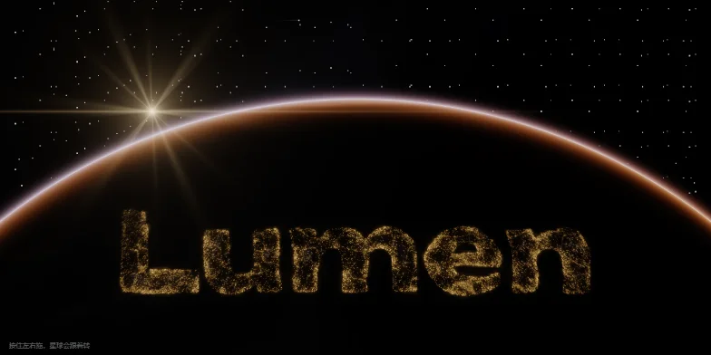
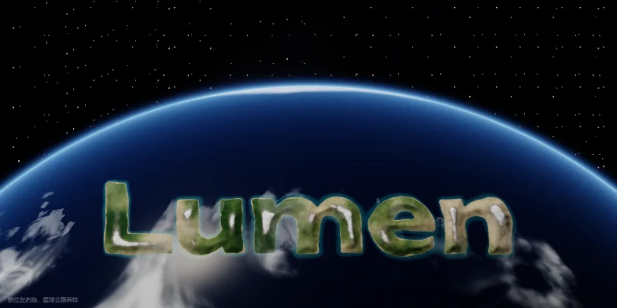
一方枯山水，品牌名是白砂里的几座苔岛，右边一组三块青石。砂是实时算的高度场，光从左上方低低地打过来，每一道砂垄都在沟里投下影子。开场一根长耙从左走到右，砂纹再从苔岛和石头边上一圈圈荡开；鼠标就是一把五齿耙，按住拖动能耙出新的沙纹。
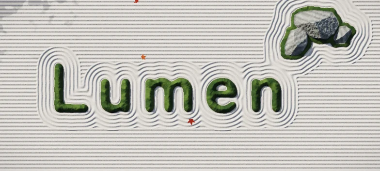
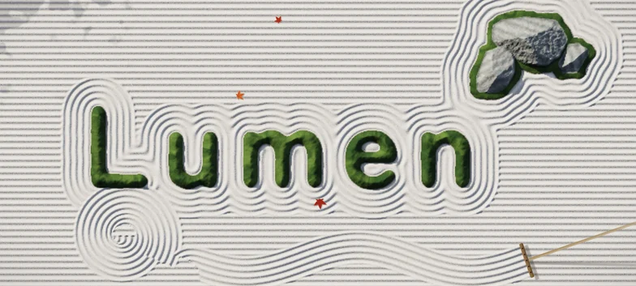
昏暗的铸造车间里，行车吊来一包铁水，倒进砂型，顺着浇道把品牌名的每一笔灌满。铁水的颜色按黑体辐射算，从白黄退到橙、暗红，表面结出一层带裂纹的壳。冷下来以后震箱落砂，露出立在格栅上的铸件，角磨机把字面磨出光。鼠标是一把测温枪，指到哪里读哪里。
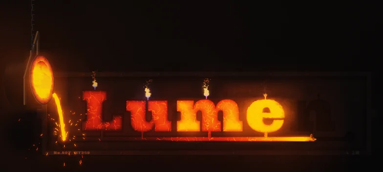
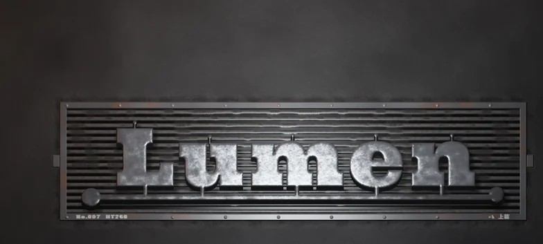
一台手摇纸带音乐盒摆在灯下的木桌上，品牌名打成纸带上的孔：每一列是一个时刻，每一行是一个音，用的是五声音阶，底下几行低音拨着和弦。一竖成了往上走的琶音，一横是同一个音连拨，弯笔就是起伏的旋律。摇动摇柄，纸带走过钢制音梳，倒着摇就倒着放。
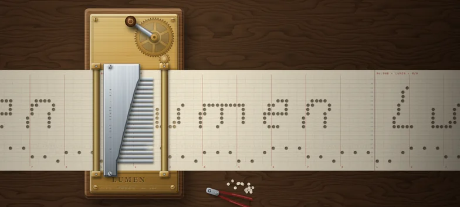
冬夜隔着一扇窗往外看，街灯和人家的窗都虚成了光斑。玻璃上的冰花是实时算出来的：品牌名先冻成一排霜字，四周留着一圈没结冰的空隙，然后一枝枝蕨叶似的枝晶从字边、窗角长出来，大约半分钟爬满半扇窗。按住玻璃是哈一口气，那一片起雾、冰化开；松开以后，冰会从边上慢慢长回来。
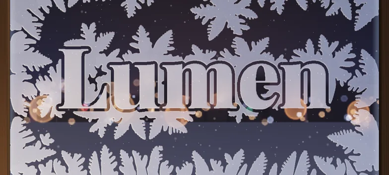
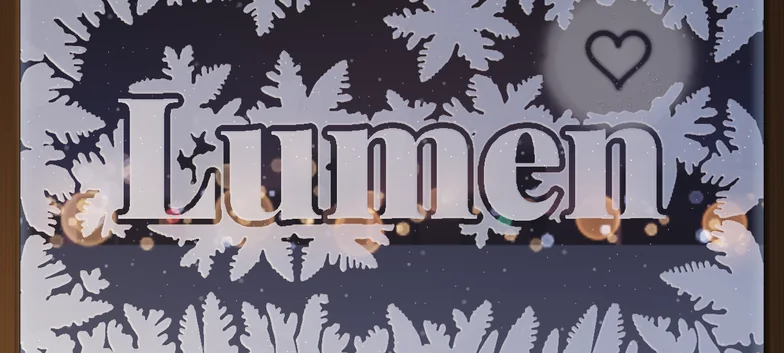
一座低速烟风洞的试验段，品牌名是放在气流里的模型。气流在显卡上用格子玻尔兹曼方法实时算：烟线碰到字就分开，从字缝里钻过去，在每个字背后卷成小涡，最后脱落成一串左右交替的卡门涡街。拖动风机滑杆，流动从平稳绕流变成湍乱的尾流；还能切到涡量、速度和压力图，像看一份实验报告。
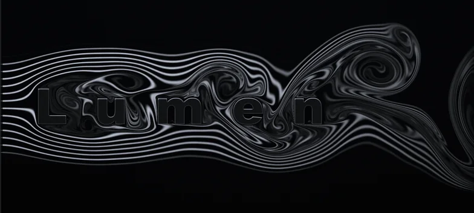
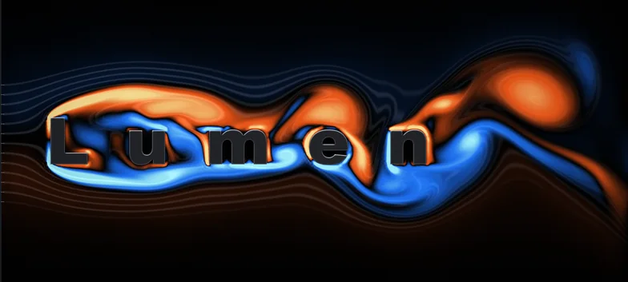
木地板上立着三千多块黑色骨牌，正面是白点，背面印着颜色。一颗钢珠滚过来撞倒第一块，连锁反应沿着路线传开：分叉又汇合，扭几道弯，卷进一个螺旋，再分成二十几路冲进整片场地。场地倒下时镜头拉远、放慢，骨牌背面朝上，从左到右拼出品牌名。
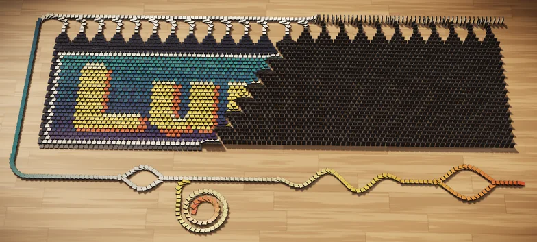
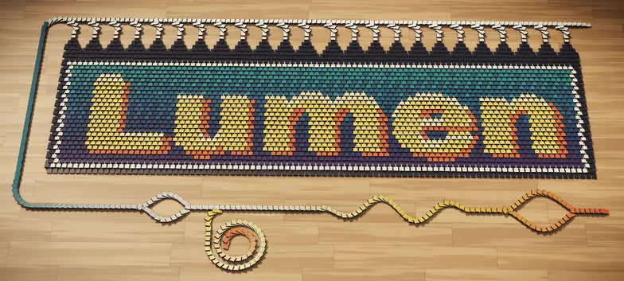
一开始的十一批练习：官网底部那行占满整宽的品牌大字，一共 86 种做法。上面有几页就是从这里挑出来重做的。
每一页的品牌名默认是 Lumen，在网址后面加上 ?name=星河 就能换成别的名字。